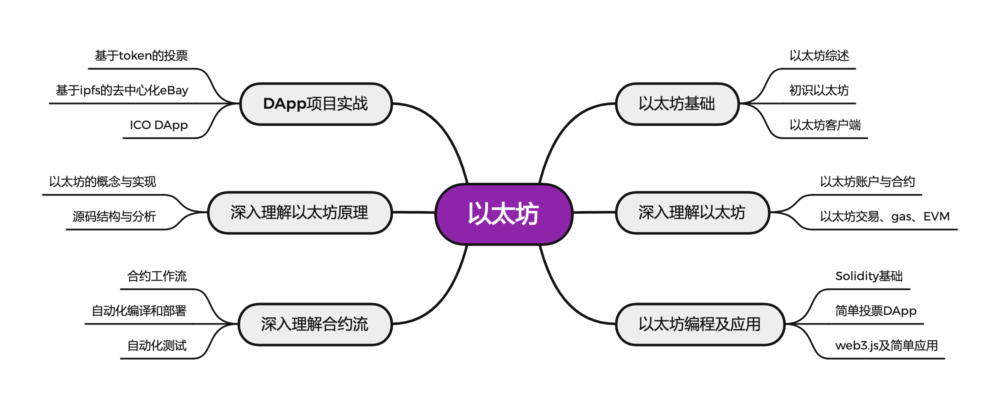

2022.3.10

以太坊基础
深入理解以太坊
以太坊编程及应用
深入理解合约流
深入理解以太坊原理
DApp项目实战
区块链按照尚硅谷机构培训课程整理。
掌握以太坊的基本概念和工作原理。
理解以太坊与比特币的联系和区别。
掌握以太坊客户端的使用。
深入理解智能合约。
掌握Solidity语法,并能够写出复杂的合约。
掌握web3js的调用,并能够实现具体的DApp。
综合运用各种工具,完成较复杂的项目。
链接: https://pan.baidu.com/s/1XOjwGi4rPa5vIll5c_1lMg?pwd=u7gp
提取码: u7gp
如果资源失效请联系我
尚硅谷区块链资料 https://pan.baidu.com/s/1PJocX5nbpWCwMERMF76vAQ 提取码：yyds
以太坊课程
【Java】
【Go】
【以太坊】
以太坊
以太坊区块链浏览器
钱包
客户端
go-ethereum ( Go ) - 官方推荐，开发使用最多
Ganache – 以太坊客户端(测试环境私链)
parity ( Rust ) - 最轻便客户端，在历次以太坊网络攻击中表现卓越
编程语言, 编辑器, 第三方库,开发框架
按照尚硅谷区块链课程（以太坊白皮书之前）进行整理，完成基础框架构建
V2 2022.
按照尚硅谷区块链课程（不包括白皮书黄皮书）进行整理，完成两个案例